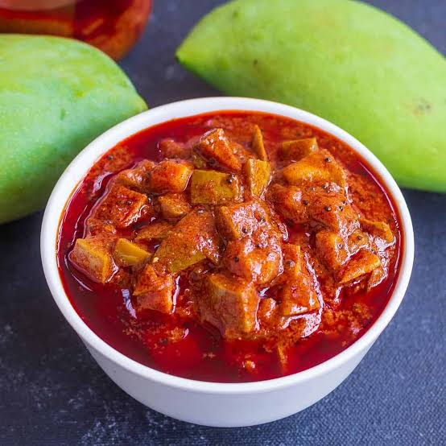

Ingredients:
- 500g raw mangoes (cut into small pieces)
- 3 tbsp mustard seeds (coarsely ground)
- 2 tbsp red chili powder
- 1 tbsp turmeric powder
- 1 tbsp salt (adjust as per taste)
- 1 tbsp fennel seeds (optional)
- 1 tbsp nigella seeds (kalonji)
- ½ cup mustard oil

Instructions:
Prepare Mangoes –
Wash, dry, and cut raw mangoes into small pieces. Ensure they are completely dryMix Spices –
In a bowl, mix mustard seeds, chili powder, turmeric, salt, fennel seeds, and nigella seeds.Coat Mangoes –
Add the spice mix to the mango pieces and mix well so the spices coat them evenly.Add Oil –
Heat mustard oil until slightly warm (not too hot) and mix it with the mangoes.Store & Ferment –
Transfer to a sterilized jar, cover it, and let it sit in sunlight for 4-5 days, shaking it daily
కావలసినవిః
- 500 గ్రా పచ్చి మామిడి (చిన్న ముక్కలుగా)
- 3 టేబుల్ స్పూన్లు ఆవాలు
- 2 టేబుల్ స్పూన్లు ఎర్ర మిరప పొడి
- 1 టేబుల్ స్పూన్ పసుపు
- 1 టేబుల్ స్పూన్ ఉప్పు
- 1 టేబుల్ స్పూన్
- ½ కప్పు ఆవాల నూనె
మామిడి పండ్లను సిద్ధం చేయండి
పచ్చి మామిడికాయలను కడిగి, ఎండబెట్టి, చిన్న ముక్కలుగా కట్ చేసుకోండి. అవి పూర్తిగా పొడిగా ఉన్నాయని నిర్ధారించుకోండి. మిక్స్ మసాలాలు -
ఒక గిన్నెలో, ఆవాలు, కారం, పసుపు, ఉప్పు, సోపు గింజలు మరియు నిగెల్లా గింజలను కలపండి. మామిడికాయలను కోట్ చేయండి -
మామిడి ముక్కలకు మసాలా మిశ్రమాన్ని వేసి బాగా కలపండి, తద్వారా మసాలాలు వాటిని సమానంగా కోట్ చేస్తాయి.నూనె జోడించండి -
ఆవాల నూనెను కొద్దిగా వెచ్చగా (చాలా వేడిగా కాకుండా) వేడి చేసి, మామిడికాయలతో కలపండి. స్టోర్ చేయండి -
క్కూజాకు బదిలీ చేయండి, దానిని కప్పి, 4-5 రోజులు సూర్యరశ్మిలో ఉంచి, ప్రతిరోజూ కదిలించండి.